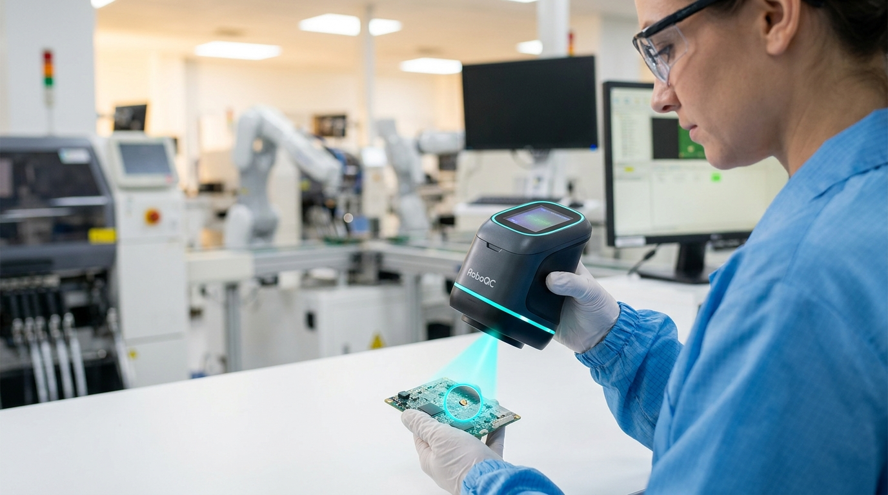
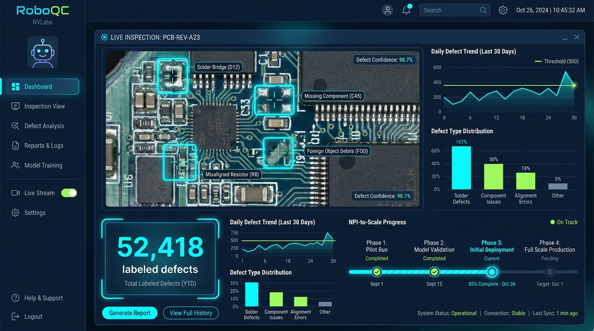

RoboQC — контроль качества от NPI до масштаба
Начните вручную. Масштабируйтесь автоматически. Ручной сканер ошибок собирает данные с первого дня запуска изделия — и к выходу на серию автоматический контроль уже обучен на ваших дефектах.

Ловушка этапа NPI
Запуск нового изделия — момент, когда контроль качества нужнее всего, а данных для него ещё нет.
Ручной контроль не масштабируется
Медленно, субъективно, не успевает за выходом на объём. Брак уходит к клиенту уже на ранней серии.
Автоконтроль нечем кормить
CV-моделям нужны тысячи примеров дефектов. На NPI их физически нет — автоматизация не стартует.
Как работает RoboQC
Ручной контроль на NPI превращается в обучающие данные для автоматизации на масштабе.
Скан
Оператор инспектирует деталь ручным сканером. Каждая проверка — размеченный пример: фото, зона, тип дефекта.
Накопление
Библиотека дефектов растёт сама, внутри обычной работы — без отдельного проекта по разметке.
Синтетика
Редкие дефекты досинтезируются в NVIDIA Omniverse — нехватка данных NPI закрыта.
Автоконтроль
К выходу на серию инлайн-камеры RoboQC инспектируют поток автоматически.

Полный спектр компьютерного зрения NVIDIA
RoboQC построен на сквозном CV-стеке NVIDIA — от edge-устройства до инлайн-аналитики.
| Этап | Технология | Что даёт |
|---|---|---|
| Ручной сканер на NPI | Jetson | Подсветка зон и теггинг дефектов в руке оператора |
| Дефицит данных | Omniverse Replicator | Синтетические редкие дефекты |
| Обучение модели | TAO Toolkit | Детекция на реальных + синтетических дефектах |
| Понимание дефектов | VLM / NIM | Классификация без полной ручной разметки |
| Автоконтроль на объёме | Metropolis + DeepStream | Инлайн-инспекция потока деталей |
| Скорость инференса | TensorRT | Контроль в темпе конвейера |
Контроль качества, который растёт вместе с производством
RoboQC — направление NVLabs. Закрытый ранний доступ для контрактных производителей электроники.
Запросить демо